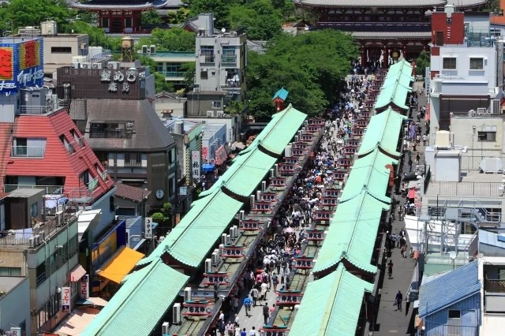
台東區
台東區是日本東京都的特別區之一，為東京都面積最小的特別區。全區幾乎位於東京23區的中心，東接隅田川。區內擁有上野、淺草兩大繁華商圈，特產是皮革製品、人偶、玩具、傳統工藝品等。
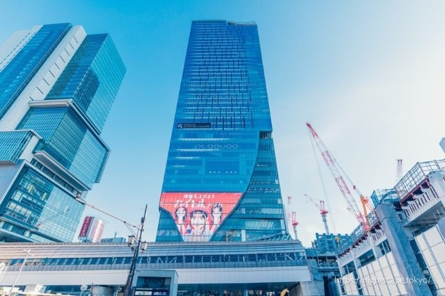
澀谷區
澀谷區是日本東京都的特別區之一，位處東京都心西南側，區內有澀谷、原宿、惠比壽、新宿南口等東京重要商圈及代代木公園。與千代田區、中央區、港區、新宿區為「都心5區」。
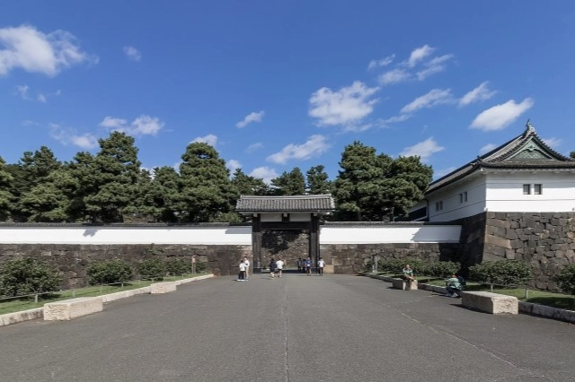
千代田區
千代田區是日本東京都23個特別區之一，位於東京都區部中心，占地11.66平方千米，自北邊順時針方向分別與文京區、台東區、中央區、港區、新宿區相接。日本國會、首相官邸、最高法院、大部分中央行政機關及天皇住所皆座落於此；區內大手町、丸之內、有樂町等商圈亦是許多日本大型企業總部的聚集地，使得該區成為日本首屈一指的政治經濟中樞。區內名勝包括東京站、秋葉原、靖國神社、神保町古書街、日本武道館等。
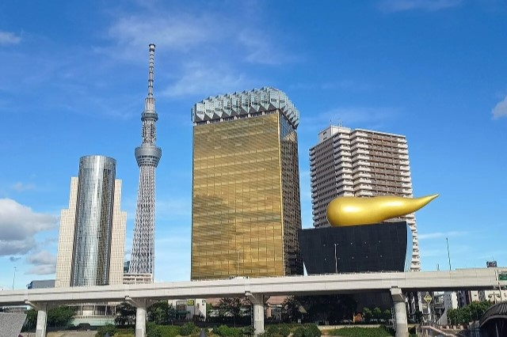
墨田區
墨田區是日本東京都內23個特別區之一。其特點是一個夾於河川之間的城區。西邊以隅田川為區的區境，而荒川及中川合致而成為東邊的區境。2012年啟用，成為東京都新地標的東京晴空塔位於此區。
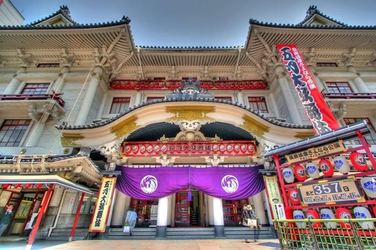
中央區
中央區是日本東京都內的23個特別區之一，由於其位於23區的正中央位置之故，因而得名。中央區不僅地理位置處於東京的中心地，更是日本經濟、信息、商業等的中心。著名的日本銀行、東京證券交易所等日本經濟核心都位於中央區。除此之外，包括銀座、大型布莊與百貨公司總社聚集的日本橋、以及以魚貨市場聞名的築地皆位於本區範圍之內。
「聖地巡禮」（日語：せいちじゅんれい）是什麼？
它是近年常用於流行文化相關旅遊的日語單字，是指造訪動漫遊戲或電影作品中舞台的地方。
日本的作品場景大多都是取自日本國內。這個詞最初是宗教朝聖的意思，但最近更常聽到的是用在與流行文化相關的旅遊。
受到2016年動畫電影「你的名字」影響，「聖地巡禮」的用詞入圍當年的日本年度流行語大賞之一，同時也變成了一種社會現象。
其中最有名的要數80年代青春記憶的《灌籃高手》。櫻木花道在鐵路旁微笑著對赤木晴子招手，、十字路口、還有對面的海岸線，都在此場景。
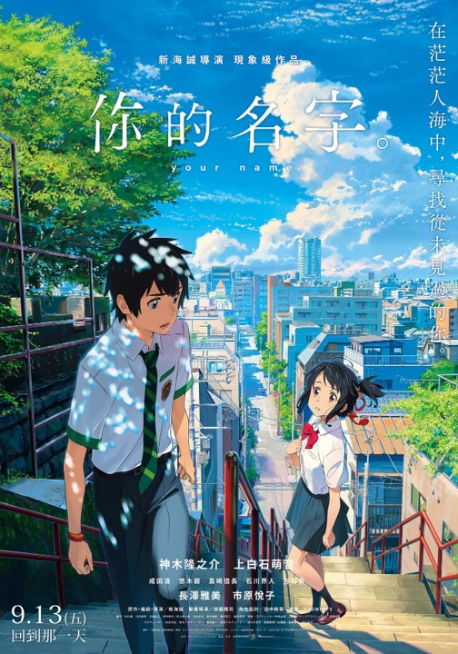
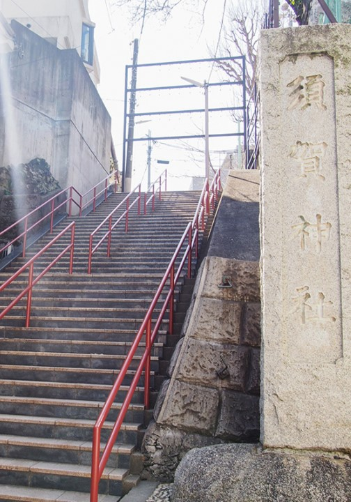
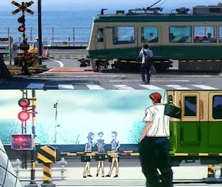
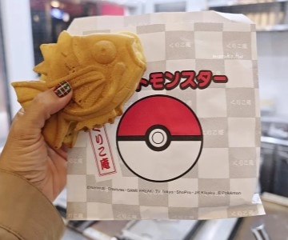
くりこ庵鯛魚燒
秋葉原くりこ庵鯛魚燒，有獨家授權的鯉魚王造型鯛魚燒，就連紙袋也做成寶貝球圖樣超吸睛。想吃一般鯛魚燒也有，紅豆、黑糖奶油，以及不定期季節限定口味，內餡飽滿不過甜，當點心恰到好處呢～
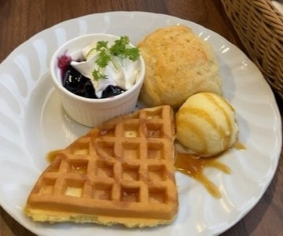
CURE MAID CAFÉ
CURE MAID CAFÉ是於2001年開幕的日本第一家女僕咖啡廳。女僕們穿著古典的制服提供服務的風格，就是源自於此。也曾在動漫作品中登場過，被粉絲們視為「聖地」，擁有極高的人氣。從歐姆蛋飯、義大利麵等份量十足的餐點，到精心製作的甜點，餐食、飲料類的選擇豐富。還被日本紅茶協會認定為「好喝紅茶的店家」。店內使用多款餐具將這些餐點和飲品襯托得更為精緻。
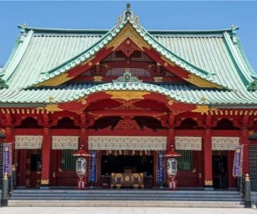
神田神明神社
神田神明歷史悠久，據說對結良緣、保佑商業興隆及消災除厄都特別靈驗，還是勝負運的守護神。神社地處商務辦公區，新年之際會有許多公司職員來這裡參加初詣參拜，祈求工作順利、事業運上升。
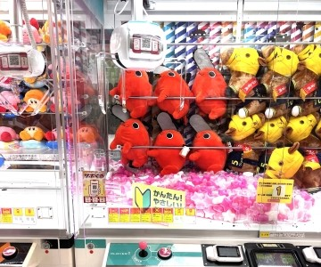
GIGO
GiGO遊戲中心在秋葉原共有4間分店，以3號店規模最大，有夾娃娃機、拍貼機、音樂遊戲，最大特色是6F有各式各樣的復古街機 (快打旋風、賽車、射擊遊戲等)，超適合親子同樂的秋葉原景點。
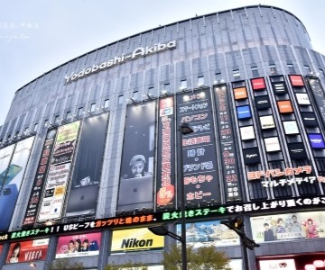
友都八喜
秋葉原佔地最大的電器賣場友都八喜秋葉原，想得到的電器都能在這裡找到。
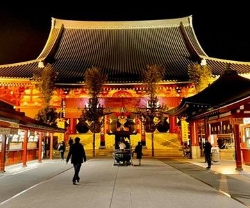
淺草寺
正式名稱為金龍山淺草寺，是東京都內歷史最悠久的寺院。供奉的本尊是聖觀音。原屬天台宗，於第二次世界大戰後獨立，成為聖觀音宗的總本山。
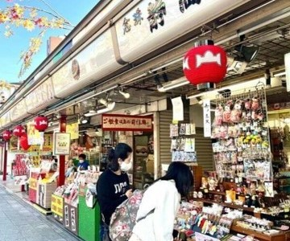
仲見世通
仲見世通為從淺草寺的雷門至寶藏門為止，長達250m的參道。參道兩側都是各式小店，不僅有雷粔籹或人形燒等點心店，更有販賣工藝品及名產的店舖，總是吸引大量人潮。
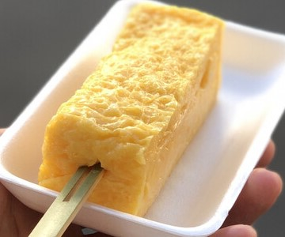
山長玉子燒
山長玉子燒創業於昭和24年(1949年)，已經有75年的歷史。可以在現場享用普通口味的玉子燒，還提供加入蟹肉 、扇貝、穴子、蔥花等多種口味可以外帶回去。
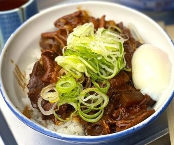
狐狸屋牛丼
狐狸屋牛丼是在地70年人氣牛雜老店，最多人推薦「牛臟蓋飯」，味噌燉煮牛腸、牛肝等內臟超入味，搭配蔥花、再加點半熟蛋或生蛋一吃上癮；人氣次之「牛蓋飯」多瘦肉不膩口。
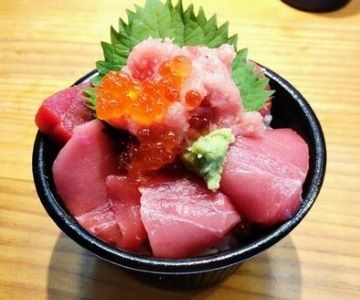
まぐろや黒銀
まぐろや黒銀在東京築地市場與大阪黑門市場都有店家，主要就是專賣鮪魚類的生魚片、丼飯、壽司，鮪魚有多種部位選擇:大腹、中腹、赤身…等，可以根據預算選擇自己想吃的餐點，鮪魚生魚片鮮甜又新鮮!
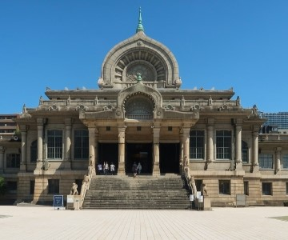
築地本願寺
築地本願寺創建於1617年，在明厲年間的大火災中被燒毀。於1679年重建了本堂，後來又在1923年的關東大地震中再次被燒毀。現今的這座具有古代印度佛教建築風格的本堂，則由日本著名建築史學家伊東忠太博士設計，於1934年落成。
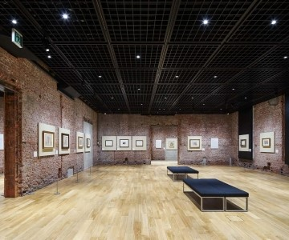
東京車站畫廊
連接各路交通樞紐的東京車站不僅僅是一個通過點，還被作為推廣藝術文化之處，於1988年設立了這間畫廊。就地理或歷史而言都是日本核心地位的東京車站，是歷經多個時代淬煉的日本近代史舞台。而體現這份歷史的紅磚牆展示室，展現出美術館獨一無二的存在感。
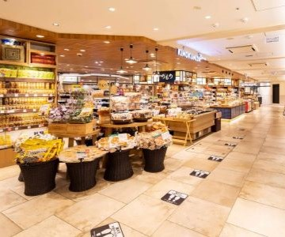
GRANSTA丸之內
是東京站丸之內地下改札口外的「車站內」商業設施。林立著各種商店，包括生活雜貨店、咖啡廳和餐廳等。在這裡能找到M以列車和東京車站丸之內站舍為概念設計的文具等各種適合當作旅行伴手禮的貼心禮物。
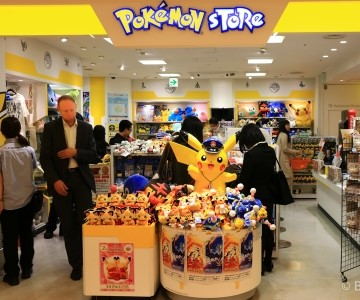
東京動漫人物街
位於「東京站一番街」的一隅。這裡匯集了國內外擁有超高人氣的「寶可夢」、「蠟筆小新」、「角落小夥伴」等動漫人物商店。還有一些只能在「東京動漫人物街」才買得到的商品。
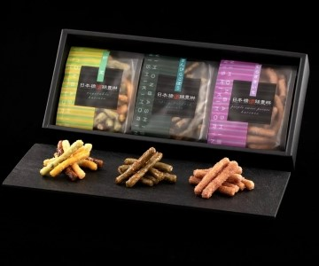
桂新堂
桂新堂為1866年（慶應2年）在名古屋開業的蝦味仙貝老店，推出只在東京販售的限定商品。仙貝上畫著2隻貓熊在東京觀光名勝前拍攝紀念照、在淺草散步享受美食、觀看相撲比賽等圖案，充滿趣意。
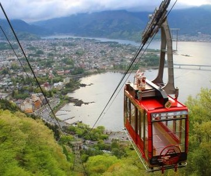
富士山景觀纜車
富士山景觀纜車是連結河口湖與天上山公園的交通方式。從纜車內可俯瞰下方河口湖的美麗景色。天上山山頂的公園是可以正面欣賞富士山和河口湖絕美景色的知名景點。
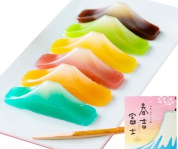
春吉富士
富士山羊羹 春吉富士有著6種不同顏色，口味分別有紅豆、青柚子、日向夏、櫻葉、琵琶及鹽味，是象徵好運的和菓子，曾獲得2019年日本「全國伴手禮大獎」的準優勝殊榮。
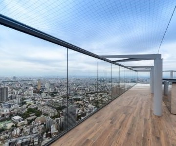
SHIBUYA SKY
SHIBUYA SCRUMBLE SQUARE是2019年11月開幕的大型複合設施，分為地上46層、地下2層，其中45樓及頂樓的SHIBUYA SKY以無邊際的玻璃展望台而聞名，比起東京晴空塔的全室內展望台相比，半戶外的空間能無邊無際眺望澀谷市區景色。
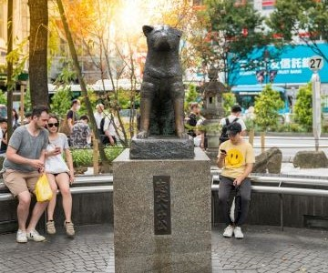
澀谷八公銅像
澀谷車站的八公銅像，來自秋田大館的小八，每天都來澀谷車站前，等待從東大農學部下班的上野博士。直到有一天，上野博士突然在學校辭世，不知情的小八依舊每天到車站等待，不停地在人群中尋找教授的身影，直至離世為止。為緬懷小八對主人忠心耿耿的情懷，以及令人永世動容的忠誠，就在澀谷車站出口處設立八公紀念銅像，這裡也成為年輕人約會的會面點。
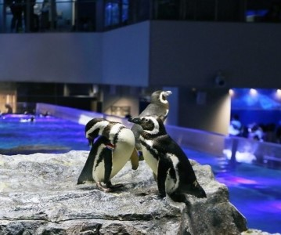
墨田水族館
墨田水族館位在東京晴空塔城西館的5樓和6樓，是一座室內型水族館。使用獨自的人工海水生產系統，為水生生物提供舒適的環境，並為參觀者展現了充滿藝術美感的海洋世界。水族館的設計理念為“越靠近看越會更加喜歡”，讓遊客能在近處觀各種海洋生物。
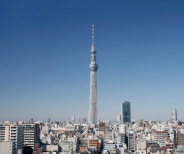
東京晴空塔
東京晴空塔城的中心是高度為634公尺的「東京晴空塔」。東京晴空塔是一座無線電塔兼旅遊設施，在塔內的350公尺和450公尺處分別設有「天望甲板」和「天望回廊」兩個觀景台。
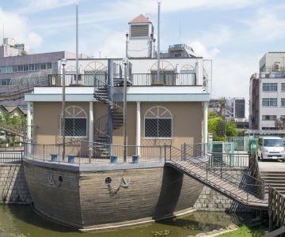
大橫川親水公園
位在晴空塔下方的吾妻橋附近有一個超大型的親水公園，整座公園沿著墨田區大橫川所興建，全長約1.8公里，公園內分成5個區域，有垂釣川原區、河童川原區、花紅葉川原區、兒童戲水區以及釣魚區，每一個區域都有不同的風景，而最靠近晴空塔一處有一個超長滾輪溜滑梯的船造型建築，特別的外型吸引很多人前往遊玩。
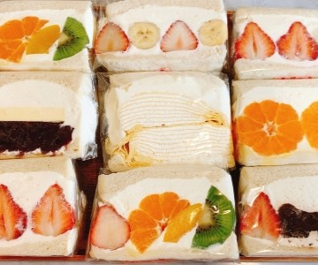
Cafe Cocona
這家咖啡廳一樣是位於東京晴空塔腳下，店裡販售香濃的手沖咖啡飲品以及每天新鮮出爐的麵包熟食，其中最熱賣的就是每天手工製作的水果三明治，新鮮的水果切片或是果乾與鮮奶油一起夾在三明治內餡中，超級厚實有份量吃起來分常爽口，另外也有蔬菜夾肉的鹹食口味，看起來也是超級美味。
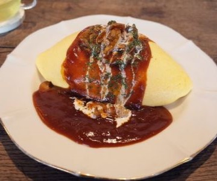
美味もの研究所
在押上的這家美味しいもの研究所，有三種必點口味的蛋包飯，經典番茄醬、法式多明格拉斯醬、起司熔岩醬，簡單卻藏著讓人流淚的美味。
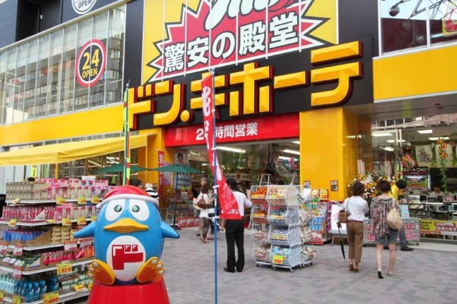
唐吉訶德
唐吉訶德是一家從日用品到高級品牌一應俱全，為顧客帶來新鮮刺激購物體驗的綜合折扣店。服務於日本及世界各地的顧客。
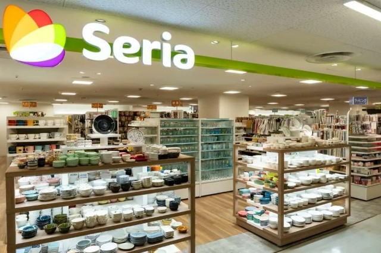
Bic Camera
Bic Camera，是日本一家連鎖家電量販店企業。BIC CAMERA是日本家電量販店業界的第二大企業，Kojima和Sofmap是其子公司。
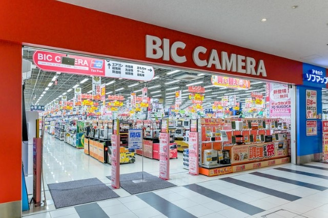
日本橋高島屋
澀谷(Shibuya)位處東京都心西南側，是東京最具代表性的商圈之一，澀谷站前交叉口的行人保護時相，則是東京象徵性的城市地景之一。
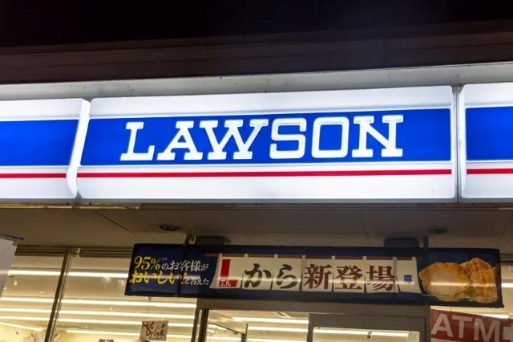
戶越銀座商店街
戶越銀座商店街從東急池上線「戶越銀座」站向東西方向延伸，總長度為1.3公里。大約有400家多店鋪林立在街道兩旁，從販售蔬菜水果、鮮魚和肉類到咖啡館、麵包糕點店，以至錢湯等五花八門應有盡有。
Copyright © 2025 林辰璟